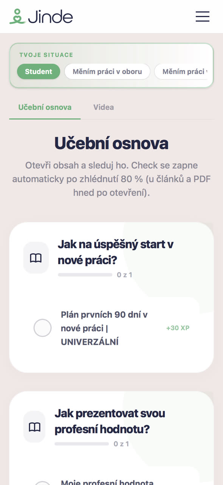
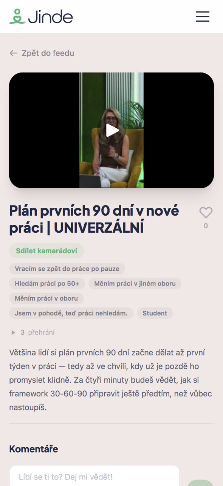
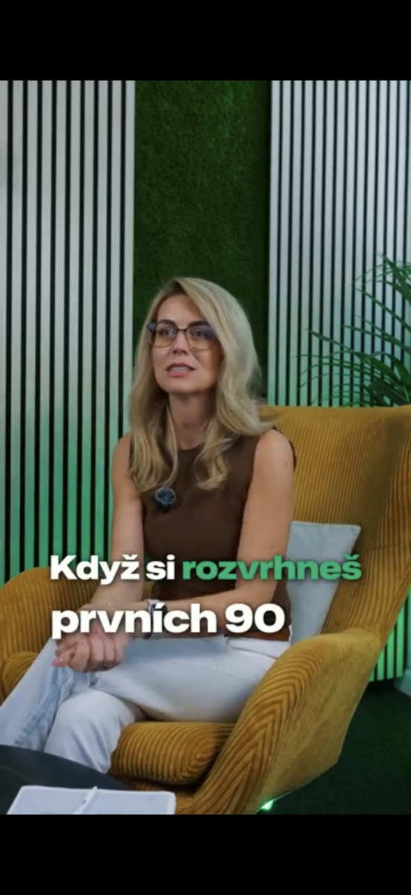
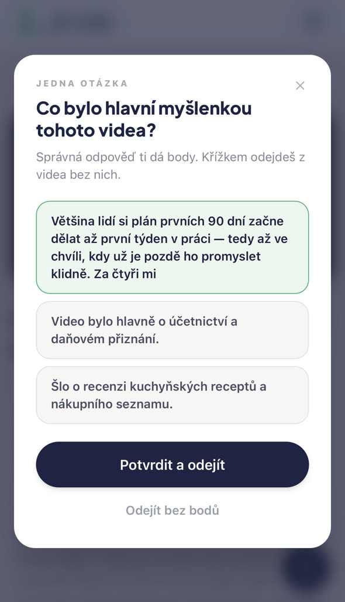
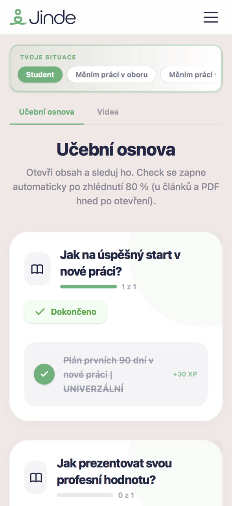

Pochop, jak to vidí druhá strana
Co personalista opravdu čte v CV, na co se ptá na pohovoru a proč firmy nereagují. Ne domněnky — pohled někoho, kdo nabírá každý den.
Jinde Edu · vzdělávací platforma zdarma
Jinde je vzdělávací platforma pro lepší život v práci — ať už chceš růst tam, kde jsi, nebo se připravit na novou kariéru na místě, které tě bude bavit. Krátká videa z praxe HR, konkrétní kroky a žádná nudná teorie.
Není to tak složité
Většina lidí hledá práci naslepo — a pak se diví, že je nebaví. My to otáčíme: nejdřív pochopíš, jak to funguje na druhé straně, a teprve potom jednáš.
Co personalista opravdu čte v CV, na co se ptá na pohovoru a proč firmy nereagují. Ne domněnky — pohled někoho, kdo nabírá každý den.
Každé video končí tím, co uděláš ještě dnes. Checklisty a PDF k stažení, žádné „zamysli se nad svou motivací".
Za dokončený obsah sbíráš body a postupuješ úrovněmi. Vidíš, co máš za sebou — a co ti ještě chybí k práci, která ti sedne.
Ukázky z Edu
Krátká videa na výšku, natočená pro mobil. Jedno téma, jeden příběh z praxe, jeden konkrétní závěr. Klepni a pusť si je se zvukem.
Deset let v call centru není nula. Jak přeložit zkušenosti z jiného oboru do řeči, které HR rozumí — místo srovnávání jablek s hruškami.
Zdarma v EduPetra reaguje jen na inzeráty a netuší, že každý obor má komunity, kde se lidé pravidelně potkávají. Kde firmy opravdu hledají — a jak se tam dostat.
Zdarma v EduDatum 1996 v úvodu životopisu je pro HR signál dřív, než se dostane k tomu podstatnému. Jak CV poskládat, aby mluvilo o tom, co umíš — ne kolik ti je.
Zdarma v EduNabídka z jiné firmy, tři dny na rozhodnutí a nulová představa, kolik berou ostatní. Jak si zjistit své číslo dřív, než se tě na něj někdo zeptá.
Zdarma v EduJak Edu funguje
Student, změna oboru, návrat po pauze nebo hledání práce po padesátce — každý potřebuje něco jiného. Proto si na začátku vybereš svou situaci.





Osnova se poskládá podle toho, kde právě jsi. Pustíš video, odpovíš na jednu otázku — a lekce je hotová, i s body navíc.
Tři až pět minut, jedna myšlenka. K většině témat i checklist nebo PDF, které si rovnou použiješ.
Jedna otázka po každém videu. Správná odpověď = body a postup na další úroveň. Malé vítězství, které tě drží v tempu.
Pro koho to je
Stejné situace, mezi kterými si vybíráš v Edu:
Každý měsíc přibývají další.
Kdo stojí za projektem

Zakladatelka Jinde · HR manažerka · autorka obsahu Jinde Edu
Vybírá kandidáty na druhé straně stolu — takže Edu neukazuje, „co by se mohlo líbit", ale jak nábor probíhá ve skutečnosti. Nabírá ve spektru THP i dělnických pozic, stejně jako pozice vysokého managementu nebo specializované IT role.
Pro firmy
Staňte se partnerem Jinde Edu a spojte svou značku s lidmi v momentě, kdy na sobě aktivně pracují — dřív, než začnou hledat práci jinde.
Časté otázky
Vyber si svou situaci, pusť si první video a udělej první krok k práci, která tě bude bavit.
Vstoupit do Edu zdarmaZdarma•Videa 3–5 minut•Odhlásit se můžeš kdykoli